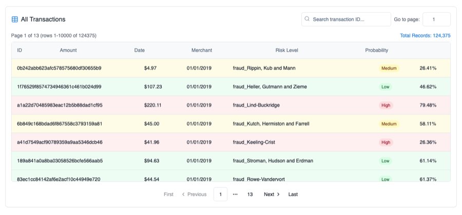
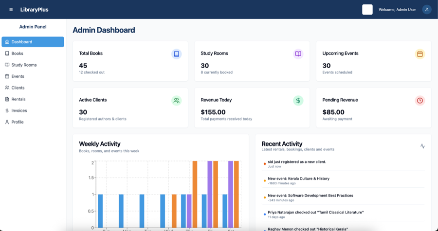
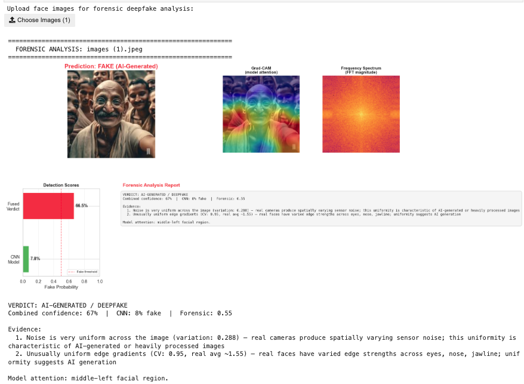

Data Analyst, GSET - NYU K12 STEM Education Center
- Built Python automation and API integrations for Slate-to-Salesforce migration.
- Developed Tableau dashboards on Salesforce and PostgreSQL data for enrollment and program tracking.
Data, cloud, and platform engineer focused on reliable systems.
I completed my Master's in Computer Engineering at New York University and previously earned my Bachelor's in Information Technology from SRM Institute of Science and Technology. My recent work at NYU K12 STEM Education Center has focused on Python automation, Salesforce integrations, and analytics workflows that improve reporting quality and reduce manual operations.
I have also worked as a DevOps Engineer at Scanpoint Geomatics in India, improving CI/CD reliability and AWS infrastructure operations with Terraform and Ansible, and as a Teaching Assistant at NYU Courant supporting Java and data structures. I am most interested in roles where platform engineering, data systems, and product delivery come together.
Current Interests:
Email / GitHub / LinkedIn / Portfolio / Kaggle / Cisco Community / Resume



Built a deepfake face detection notebook using EfficientNet, with supporting forensic-style analysis for model interpretation.
Hero: AI security monitoring dashboard. Supporting: detection architecture diagram. Results: anomaly heatmap or alert timeline.
Contributions focused on reliability, platform behavior, and developer workflows.
Added handling for duplicate task-instance success update conflicts to avoid unnecessary task runner failures.
Proposed chart updates to better support rotated git-sync credentials in Kubernetes-based deployments.
Fixed initialization behavior in the create-assets flow in airflowctl.
Added localization support for interest rate chart validation messaging.
Identified root cause across both routers and provided exact route-level remediation to restore end-to-end NAT behavior.
Clarified expected FTD update storage behavior and prevented risky manual file deletion that could affect upgrade and rollback safety.
Diagnosed stack split MAC persistence behavior and provided a practical recovery path for restoring unique switch identity.
Master's in Computer Engineering, New York University
Bachelor's in Information Technology, SRM Institute of Science and Technology
Technical Skills: Python, SQL, Java, JavaScript, AWS, Terraform, Docker, PostgreSQL, Salesforce, Tableau, Power BI, PySpark, TensorFlow, scikit-learn, Flask, and React.